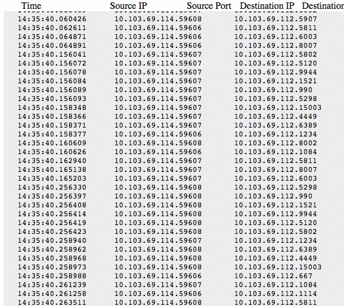

Network Visualization Project Log: 2
Status
As of this post I have a working demo of Argus filtering the Network Flow to produce only the Start Time, Source IP, Source Port, Destination Port, and Destination Port. The Node.js server uses socket.io to make the websocket which will feed the client information.
Here is the results!

Next Step
Now I need clean up the server-side code and find a way to send it as json so when writing the client-side code it will be much easier. I also need to clean up and secure the websocket server as well as the Argus server.
Check out the source code in my github!
Any suggestions are welcome @pereztr